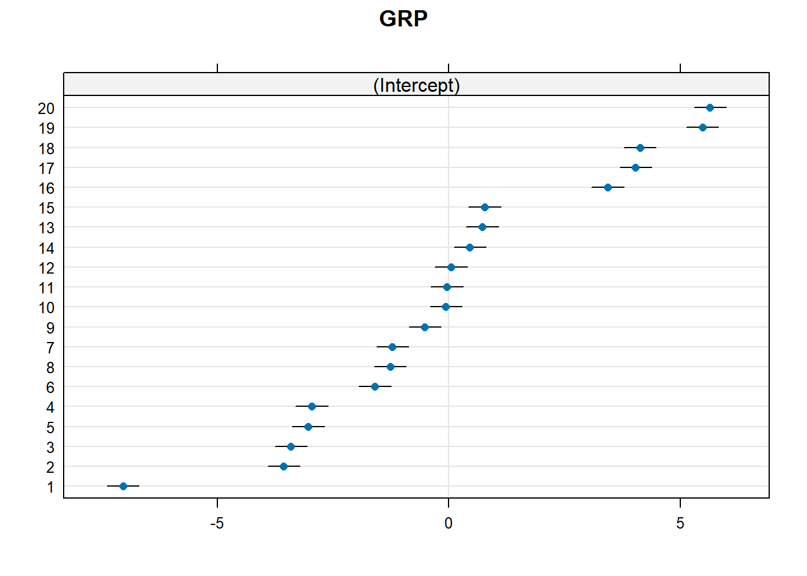
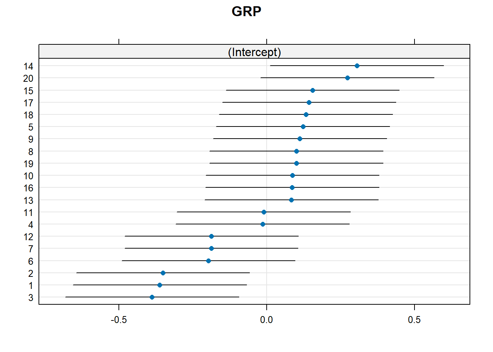
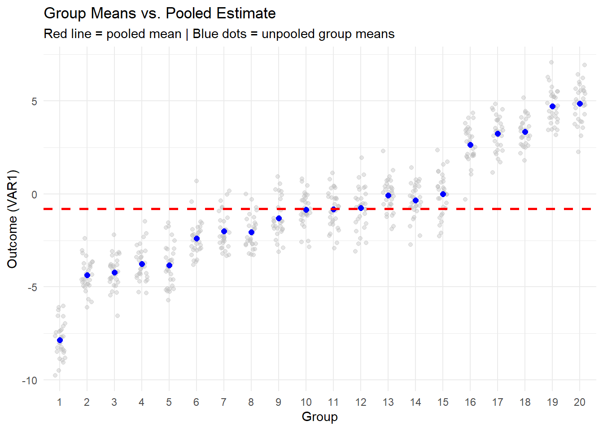
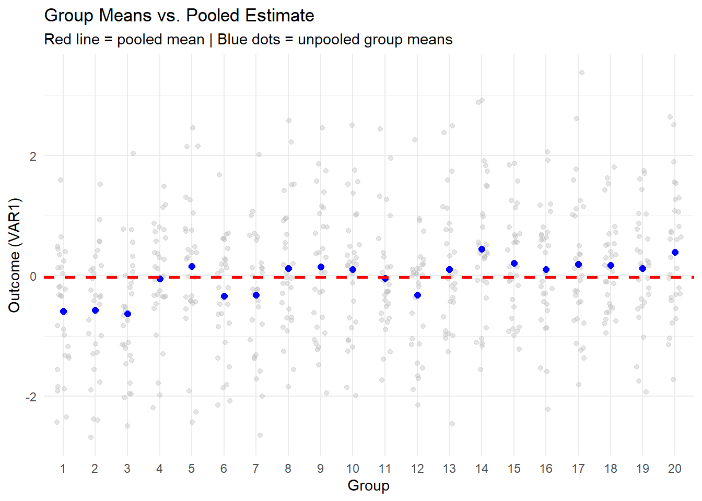
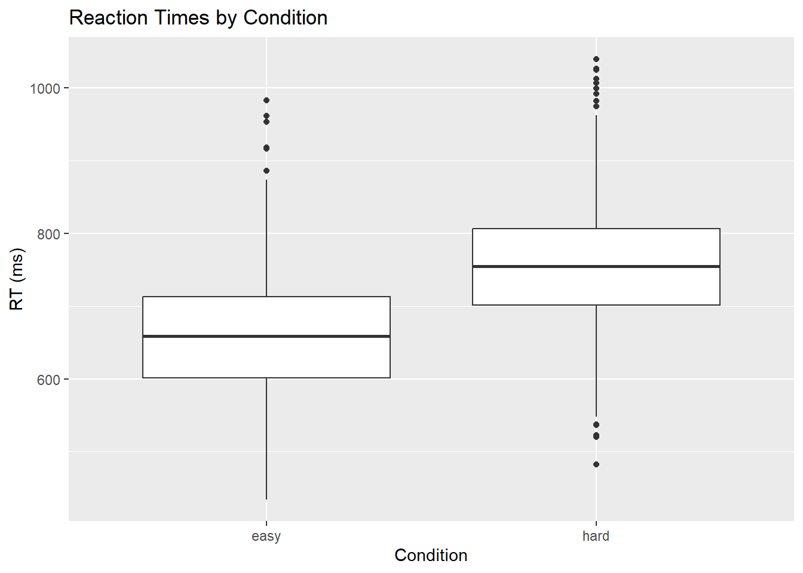
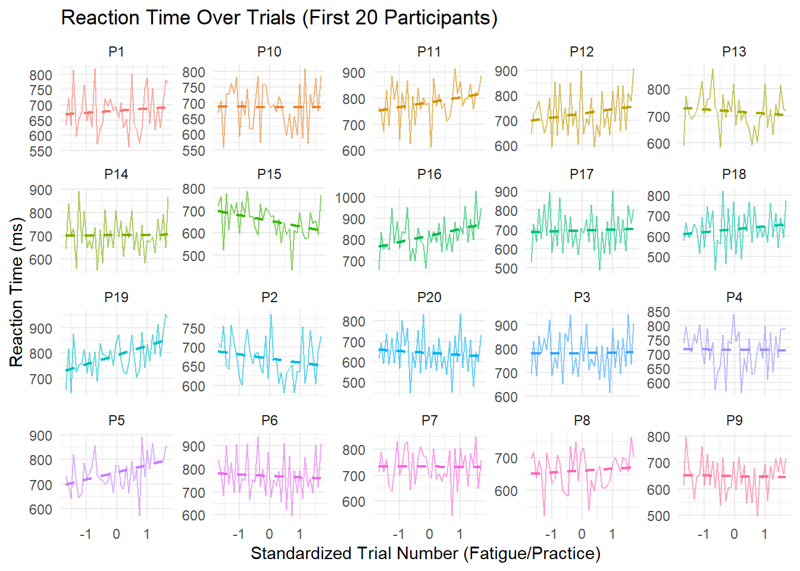
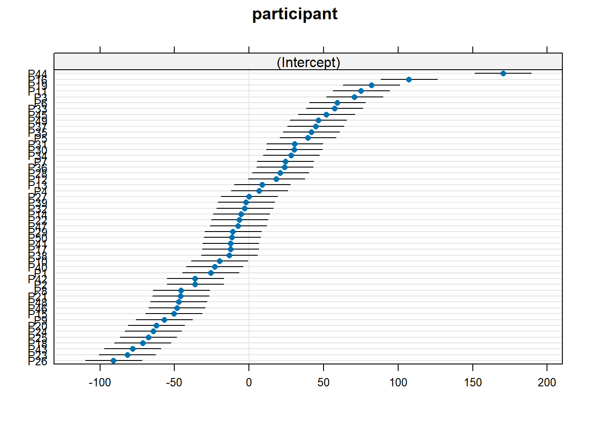
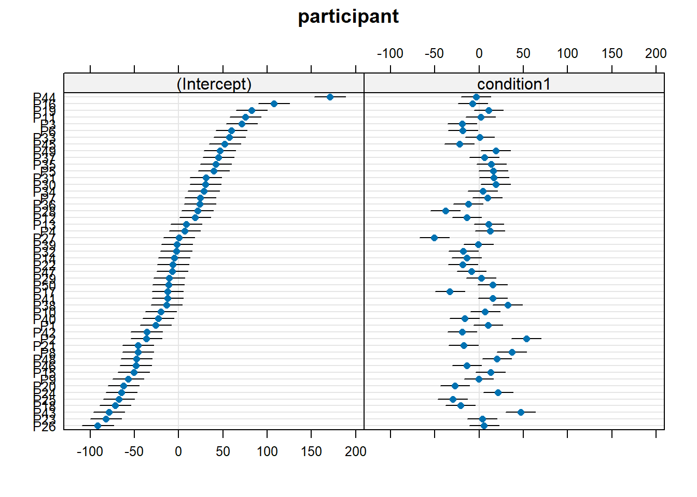

# none global variables definedMixed Models for Reaction Time Data
Background Information
This is an R Markdown document. Instructions for writing these documents and background information can be found in the book written by Xie, Allaire, and Grolemund (2018) When you execute code within the document, the results appear beneath the code. This is an R Markdown document. Instructions for writing these documents and background information can be found in the book written by Xie, Allaire, and Grolemund (2018) When you execute code within the document, the results appear beneath the code. This file contains summary statistics, respectively the analysis step (confirmatory and exploratory analyses). Files are split into multiple subfiles like data processing and data analyses steps, which follows the classical data-analysis pipeline (see Peng and Matsui 2016; Wickham and Grolemund 2017).
Global Variables
get packages, raw data, functions
### install and load packages
# if packages are not already installed, the function will install and activate them
usePackage <- function(p) {
if (!is.element(p, installed.packages()[,1]))
install.packages(p, dep = TRUE, repos = "http://cran.us.r-project.org")
require(p, character.only = TRUE)
}
usePackage("afex")
usePackage("tidyverse") # ggplot2 will be loaded
usePackage("lme4") # mixed models / GLMMs
usePackage("lattice") # plot random effects
usePackage("multilevel") # generate multilevel data with different ICCsMotivating Mixed Models
set.seed(123) # Ensure reproducibility
# ----------------------------------------
# Simulate two datasets with different ICCs
# ----------------------------------------
# High ICC (~.90): strong group effect
sim_ICC_high <- multilevel::sim.icc(gsize = 30, ngrp = 20, icc1 = 0.90)
icc_high <- multilevel::ICC1(aov(VAR1 ~ as.factor(GRP), sim_ICC_high)) # Check ICC
# Low ICC (~.05): weak group effect
sim_ICC_low <- multilevel::sim.icc(gsize = 30, ngrp = 20, icc1 = 0.05)
icc_low <- multilevel::ICC1(aov(VAR1 ~ as.factor(GRP), sim_ICC_low)) # Check ICC
# Print ICCs
cat("Estimated ICC (high):", round(icc_high, 2), "\n")Estimated ICC (high): 0.92 cat("Estimated ICC (low):", round(icc_low, 2), "\n")Estimated ICC (low): 0.06 # ----------------------------------------
# Mixed Models (Random Intercepts Only)
# ----------------------------------------
# Random intercept model for high ICC data
model_high <- lmer(VAR1 ~ 1 + (1 | GRP), data = sim_ICC_high, REML = FALSE)
summary(model_high)Linear mixed model fit by maximum likelihood . t-tests use Satterthwaite's
method [lmerModLmerTest]
Formula: VAR1 ~ 1 + (1 | GRP)
Data: sim_ICC_high
AIC BIC logLik deviance df.resid
1789.4 1802.5 -891.7 1783.4 597
Scaled residuals:
Min 1Q Median 3Q Max
-3.0205 -0.6317 -0.0245 0.6497 3.1747
Random effects:
Groups Name Variance Std.Dev.
GRP (Intercept) 10.3417 3.216
Residual 0.9428 0.971
Number of obs: 600, groups: GRP, 20
Fixed effects:
Estimate Std. Error df t value Pr(>|t|)
(Intercept) -0.7905 0.7202 20.0000 -1.098 0.285# Random intercept model for low ICC data
model_low <- lmer(VAR1 ~ 1 + (1 | GRP), data = sim_ICC_low, REML = FALSE)
summary(model_low)Linear mixed model fit by maximum likelihood . t-tests use Satterthwaite's
method [lmerModLmerTest]
Formula: VAR1 ~ 1 + (1 | GRP)
Data: sim_ICC_low
AIC BIC logLik deviance df.resid
1754.5 1767.7 -874.2 1748.5 597
Scaled residuals:
Min 1Q Median 3Q Max
-2.4830 -0.6515 0.0262 0.6083 3.1957
Random effects:
Groups Name Variance Std.Dev.
GRP (Intercept) 0.06311 0.2512
Residual 1.04260 1.0211
Number of obs: 600, groups: GRP, 20
Fixed effects:
Estimate Std. Error df t value Pr(>|t|)
(Intercept) -0.02560 0.06995 20.00000 -0.366 0.718# ----------------------------------------
# Plot Random Effects
# ----------------------------------------
# Dotplot of random intercepts (BLUPs)
dotplot(ranef(model_high))$GRP
dotplot(ranef(model_low))$GRP
# ----------------------------------------
# Confidence Intervals for Group Effects (manual)
# ----------------------------------------
# Example: CI for random effect of one group in high ICC data
test_group <- 1
postVar <- attr(ranef(model_high, condVar = TRUE)[[1]], "postVar")[, , test_group]
group_est <- ranef(model_high, condVar = TRUE)$GRP[test_group, 1]
CI_lower <- group_est - 1.96 * sqrt(postVar)
CI_upper <- group_est + 1.96 * sqrt(postVar)
cat("Group", test_group, "BLUP CI:", round(CI_lower, 2), "to", round(CI_upper, 2), "\n")Group 1 BLUP CI: -7.39 to -6.69 # ----------------------------------------
# Group-wise Means
# ----------------------------------------
sim_ICC_high %>%
group_by(GRP) %>%
summarise(N = n(), Mean = mean(VAR1)) %>%
head()# A tibble: 6 × 3
GRP N Mean
<dbl> <int> <dbl>
1 1 30 -7.85
2 2 30 -4.37
3 3 30 -4.21
4 4 30 -3.76
5 5 30 -3.84
6 6 30 -2.39sim_ICC_low %>%
group_by(GRP) %>%
summarise(N = n(), Mean = mean(VAR1)) %>%
head()# A tibble: 6 × 3
GRP N Mean
<dbl> <int> <dbl>
1 1 30 -0.587
2 2 30 -0.571
3 3 30 -0.628
4 4 30 -0.0474
5 5 30 0.164
6 6 30 -0.332 # ----------------------------------------
# Fully Pooled vs. Unpooled Linear Models
# ----------------------------------------
# Fully pooled: ignore group
pooled_model_high <- lm(VAR1 ~ 1, data = sim_ICC_high)
pooled_model_low <- lm(VAR1 ~ 1, data = sim_ICC_low)
# Plot for comparison
group_means_high <- sim_ICC_high %>%
group_by(GRP) %>%
summarise(Mean = mean(VAR1))
group_means_low <- sim_ICC_low %>%
group_by(GRP) %>%
summarise(Mean = mean(VAR1))
ggplot(sim_ICC_high, aes(x = as.factor(GRP), y = VAR1)) +
geom_jitter(alpha = 0.4, width = 0.2, color = "gray") +
geom_point(data = group_means_high, aes(y = Mean), color = "blue", size = 2) +
geom_hline(yintercept = coef(pooled_model_high)[1], color = "red", linetype = "dashed", size = 1) +
labs(title = "Group Means vs. Pooled Estimate",
subtitle = "Red line = pooled mean | Blue dots = unpooled group means",
x = "Group", y = "Outcome (VAR1)") +
theme_minimal()Warning: Using `size` aesthetic for lines was deprecated in ggplot2 3.4.0.
ℹ Please use `linewidth` instead.
ggplot(sim_ICC_low, aes(x = as.factor(GRP), y = VAR1)) +
geom_jitter(alpha = 0.4, width = 0.2, color = "gray") +
geom_point(data = group_means_low, aes(y = Mean), color = "blue", size = 2) +
geom_hline(yintercept = coef(pooled_model_low)[1], color = "red", linetype = "dashed", size = 1) +
labs(title = "Group Means vs. Pooled Estimate",
subtitle = "Red line = pooled mean | Blue dots = unpooled group means",
x = "Group", y = "Outcome (VAR1)") +
theme_minimal()
Mixed Model Example
based on:
Singmann, H., & Kellen, D. (2019). An Introduction to Mixed Models for Experimental Psychology. In New Methods in Cognitive Psychology. Routledge.
# --- Create Synthetic Reaction Time Dataset ---
# --- PARAMETERS ---
set.seed(123)
participants <- paste0("P", 1:50)
items <- paste0("I", 1:20)
conditions <- c("easy", "hard")
# --- RANDOM EFFECTS ---
# Random intercepts for participants and items
participant_effects <- rnorm(length(participants), 0, 50)
names(participant_effects) <- participants
item_effects <- rnorm(length(items), 0, 30)
names(item_effects) <- items
# Random slopes for condition per participant (some are more sensitive than others)
condition_slopes <- rnorm(length(participants), mean = 100, sd = 50) # SD=50 to boost variance
names(condition_slopes) <- participants
# Random fatigue/practice slopes for participants (some speed up, some slow down)
trial_slopes <- rnorm(length(participants), 0, 1)
names(trial_slopes) <- participants
# --- DATA GENERATION ---
data_list <- list()
for (p in participants) {
slope <- trial_slopes[p]
condition_effect <- condition_slopes[p] # individual effect of "hard" vs "easy"
trial_counter <- 1
for (i in items) {
for (cond in conditions) {
base_rt <- 700 # neutral midpoint
cond_shift <- ifelse(cond == "hard", condition_effect / 2, -condition_effect / 2)
fatigue <- slope * trial_counter
noise <- rnorm(1, 0, 50)
rt <- base_rt + participant_effects[p] + item_effects[i] + fatigue + cond_shift + noise
data_list[[length(data_list) + 1]] <- data.frame(
participant = p,
item = i,
condition = cond,
trial = trial_counter,
rt = rt
)
trial_counter <- trial_counter + 1
}
}
}
# --- BUILD FINAL DATASET ---
rt_data <- do.call(rbind, data_list)
# Convert to factors and center trial
rt_data$participant <- factor(rt_data$participant)
rt_data$item <- factor(rt_data$item)
rt_data$condition <- factor(rt_data$condition)
rt_data$trial <- scale(rt_data$trial) # z-score for interpretability
# --- Optional: quick look at the data ---
head(rt_data) participant item condition trial rt
P1 P1 I1 easy -1.688855 631.2002
P110 P1 I1 hard -1.602247 720.7999
P111 P1 I2 easy -1.515639 632.0452
P112 P1 I2 hard -1.429031 815.7372
P113 P1 I3 easy -1.342423 596.4873
P114 P1 I3 hard -1.255815 654.3204# --- Quick Summary Plot ---
ggplot(rt_data, aes(x = condition, y = rt)) +
geom_boxplot() +
labs(title = "Reaction Times by Condition", y = "RT (ms)", x = "Condition")
# Filter for first 20 participants
subset_rt <- subset(rt_data, participant %in% paste0("P", 1:20))
# Line plot of RT by trial for each participant
ggplot(subset_rt, aes(x = trial, y = rt, group = participant, color = participant)) +
geom_line(alpha = 0.6) +
geom_smooth(method = "lm", se = FALSE, linetype = "dashed", size = 0.8) +
facet_wrap(~participant, scales = "free_y") +
labs(title = "Reaction Time Over Trials (First 20 Participants)",
x = "Standardized Trial Number (Fatigue/Practice)",
y = "Reaction Time (ms)") +
theme_minimal() +
theme(legend.position = "none")`geom_smooth()` using formula = 'y ~ x'
# Set sum-to-zero contrasts globally for interpretability
set_sum_contrasts()setting contr.sum globally: options(contrasts=c('contr.sum', 'contr.poly'))# --- Fixed Effects Only Model ---
fixed_model <- lm(rt ~ condition, data = rt_data)
summary(fixed_model)
Call:
lm(formula = rt ~ condition, data = rt_data)
Residuals:
Min 1Q Median 3Q Max
-272.99 -55.65 -0.58 52.18 323.27
Coefficients:
Estimate Std. Error t value Pr(>|t|)
(Intercept) 707.280 1.834 385.69 <2e-16 ***
condition1 -47.904 1.834 -26.12 <2e-16 ***
---
Signif. codes: 0 '***' 0.001 '**' 0.01 '*' 0.05 '.' 0.1 ' ' 1
Residual standard error: 82.01 on 1998 degrees of freedom
Multiple R-squared: 0.2546, Adjusted R-squared: 0.2542
F-statistic: 682.4 on 1 and 1998 DF, p-value: < 2.2e-16# --- Random Intercepts Model (Participants) ---
ri_model <- lmer(rt ~ condition + (1 | participant), data = rt_data)
summary(ri_model)Linear mixed model fit by REML. t-tests use Satterthwaite's method [
lmerModLmerTest]
Formula: rt ~ condition + (1 | participant)
Data: rt_data
REML criterion at convergence: 22360.3
Scaled residuals:
Min 1Q Median 3Q Max
-3.2017 -0.6458 -0.0109 0.6341 3.4100
Random effects:
Groups Name Variance Std.Dev.
participant (Intercept) 2909 53.93
Residual 3872 62.23
Number of obs: 2000, groups: participant, 50
Fixed effects:
Estimate Std. Error df t value Pr(>|t|)
(Intercept) 707.280 7.753 49.000 91.23 <2e-16 ***
condition1 -47.904 1.391 1949.000 -34.43 <2e-16 ***
---
Signif. codes: 0 '***' 0.001 '**' 0.01 '*' 0.05 '.' 0.1 ' ' 1
Correlation of Fixed Effects:
(Intr)
condition1 0.000 # Plot random effects
dotplot(ranef(ri_model, condVar = TRUE))$participant
# --- Random Intercepts and Slopes (Participants) ---
ris_model <- lmer(rt ~ condition + (condition | participant), data = rt_data)
summary(ris_model)Linear mixed model fit by REML. t-tests use Satterthwaite's method [
lmerModLmerTest]
Formula: rt ~ condition + (condition | participant)
Data: rt_data
REML criterion at convergence: 22173.7
Scaled residuals:
Min 1Q Median 3Q Max
-3.4296 -0.6467 0.0149 0.6405 3.4765
Random effects:
Groups Name Variance Std.Dev. Corr
participant (Intercept) 2921.8 54.05
condition1 520.7 22.82 -0.09
Residual 3348.7 57.87
Number of obs: 2000, groups: participant, 50
Fixed effects:
Estimate Std. Error df t value Pr(>|t|)
(Intercept) 707.280 7.753 49.000 91.23 <2e-16 ***
condition1 -47.904 3.477 49.000 -13.78 <2e-16 ***
---
Signif. codes: 0 '***' 0.001 '**' 0.01 '*' 0.05 '.' 0.1 ' ' 1
Correlation of Fixed Effects:
(Intr)
condition1 -0.079dotplot(ranef(ris_model, condVar = TRUE))$participant
# --- Crossed Random Effects (Participants and Items) ---
crossed_model <- lmer(rt ~ condition +
(condition | participant) +
(condition | item), data = rt_data)boundary (singular) fit: see help('isSingular')summary(crossed_model)Linear mixed model fit by REML. t-tests use Satterthwaite's method [
lmerModLmerTest]
Formula: rt ~ condition + (condition | participant) + (condition | item)
Data: rt_data
REML criterion at convergence: 21796.5
Scaled residuals:
Min 1Q Median 3Q Max
-2.8752 -0.6492 0.0066 0.6594 3.6739
Random effects:
Groups Name Variance Std.Dev. Corr
participant (Intercept) 2939.055 54.213
condition1 538.010 23.195 -0.08
item (Intercept) 691.030 26.287
condition1 1.029 1.014 1.00
Residual 2656.637 51.543
Number of obs: 2000, groups: participant, 50; item, 20
Fixed effects:
Estimate Std. Error df t value Pr(>|t|)
(Intercept) 707.280 9.729 63.329 72.69 <2e-16 ***
condition1 -47.904 3.484 49.289 -13.75 <2e-16 ***
---
Signif. codes: 0 '***' 0.001 '**' 0.01 '*' 0.05 '.' 0.1 ' ' 1
Correlation of Fixed Effects:
(Intr)
condition1 -0.024
optimizer (nloptwrap) convergence code: 0 (OK)
boundary (singular) fit: see help('isSingular')# --- Using afex::mixed() with Type III tests ---
mixed_model <- mixed(rt ~ condition +
(condition | participant) +
(condition | item),
data = rt_data,
method = "KR")boundary (singular) fit: see help('isSingular')summary(mixed_model)Linear mixed model fit by REML. t-tests use Satterthwaite's method [
lmerModLmerTest]
Formula: rt ~ condition + (condition | participant) + (condition | item)
Data: data
REML criterion at convergence: 21796.5
Scaled residuals:
Min 1Q Median 3Q Max
-2.8752 -0.6492 0.0066 0.6594 3.6739
Random effects:
Groups Name Variance Std.Dev. Corr
participant (Intercept) 2939.055 54.213
condition1 538.010 23.195 -0.08
item (Intercept) 691.030 26.287
condition1 1.029 1.014 1.00
Residual 2656.637 51.543
Number of obs: 2000, groups: participant, 50; item, 20
Fixed effects:
Estimate Std. Error df t value Pr(>|t|)
(Intercept) 707.280 9.729 63.329 72.69 <2e-16 ***
condition1 -47.904 3.484 49.289 -13.75 <2e-16 ***
---
Signif. codes: 0 '***' 0.001 '**' 0.01 '*' 0.05 '.' 0.1 ' ' 1
Correlation of Fixed Effects:
(Intr)
condition1 -0.024
optimizer (nloptwrap) convergence code: 0 (OK)
boundary (singular) fit: see help('isSingular')References
Peng, Roger D., and Elizabeth Matsui. 2016. The Art of Data Science: A Guide for Anyone Who Works with Data. Lulu.com. https://bookdown.org/rdpeng/artofdatascience/.
Wickham, Hadley, and Garrett Grolemund. 2017. R for Data Science: Import, Tidy, Transform, Visualize, and Model Data. "O’Reilly Media, Inc.". https://r4ds.had.co.nz/.
Xie, Yihui, J. J. Allaire, and Garrett Grolemund. 2018. R Markdown: The Definitive Guide. New York: Chapman; Hall/CRC. https://doi.org/10.1201/9781138359444.